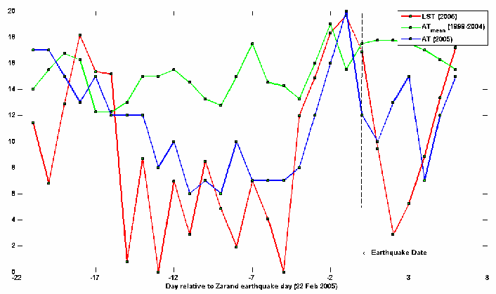
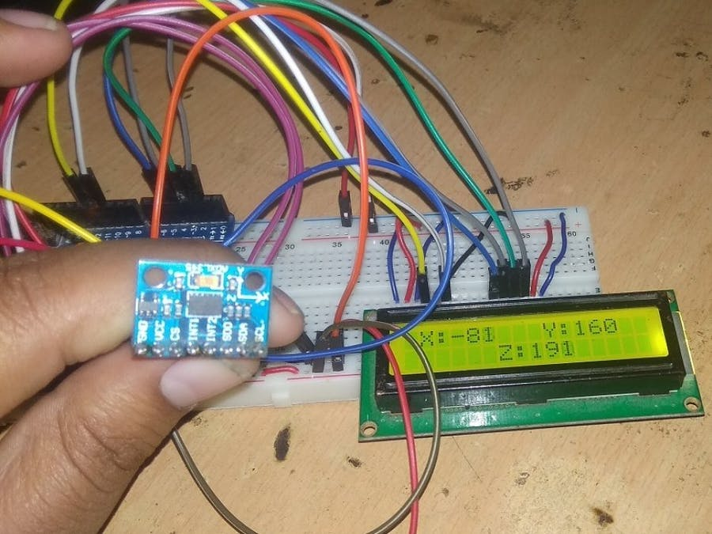

Big Solutions for a small planet
Climate change knows
no borders.
Solution of Earthquake
EARTHQUAKE
Earthquakes come without warning, making them one of the most feared natural disaster. Startups like Zizmos are working on early-warning systems using IoT (Internet of Things) sensors. Earthquake detection is provided by interconnecting multiple seismic sensors to a central server. The system works by detecting motion close to the earthquake epicenter and transmitting a warning alert to users further away from the epicenter. The system requires a large number of sensors to cover earthquake prone areas. Sensor costs have significantly decreased over the last decade through advances in smart phone and wearable technology, making an earthquake early-warning system affordable. Japan has experienced many large seismic events in its history and takes earthquake hazards seriously, imposing strict building codes and investing in disaster response personnel. Even then, extensive damage and loss of life occurs with every major Japanese earthquake. After the catastrophic 7.3 magnitude Kyoto earthquake in 1995 with a death toll of 6,434, Japan’s government created additional safeguards for its citizens in the form of seismic early warning systems. An earthquake early warning system provides safeguards for industries and people. Industrial activities can be halted before the onset of an earthquake allowing workers to secure sensitive equipment. People can take cover in safe areas preceding an earthquake to help reduce injuries and loss of life.
 